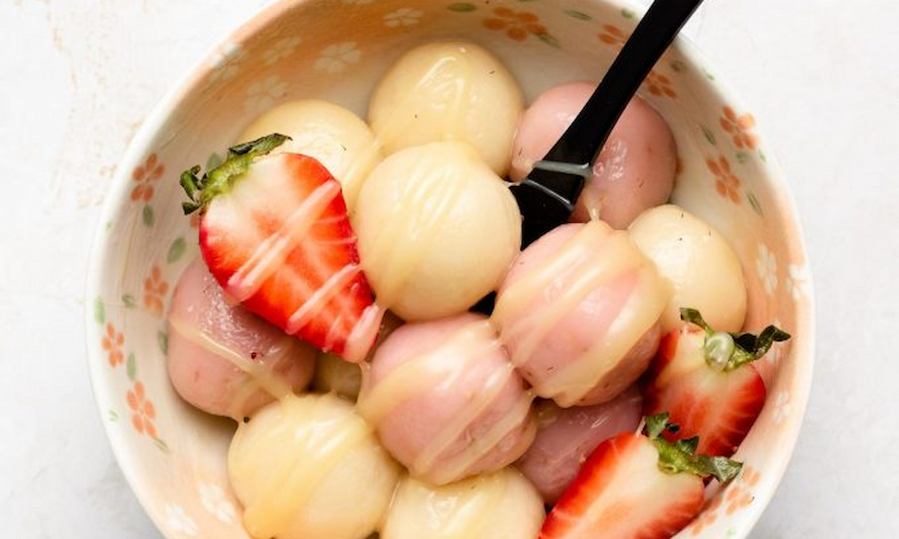

Home
Spanish
Japanese
Cajun
Cuban
Puerto Rican
Japanese Dessert Recipe
STRAWBERRY SHIRATAMA DANGO

INGREDIENTS LIST
INGREDIENTS:
50g silken tofu
50g strawberries
100g shiratamako / glutinous sweet rice flour
1-2 teaspoon water
FOR SERVING:
condensed milk
vanilla ice cream
anko (sweet red bean paste)